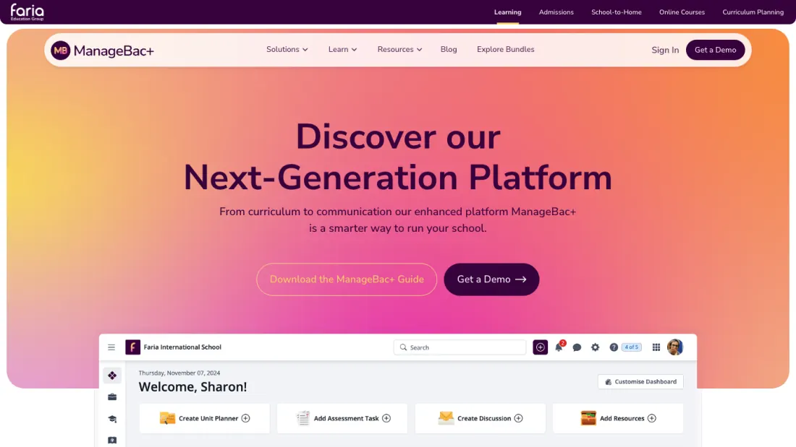
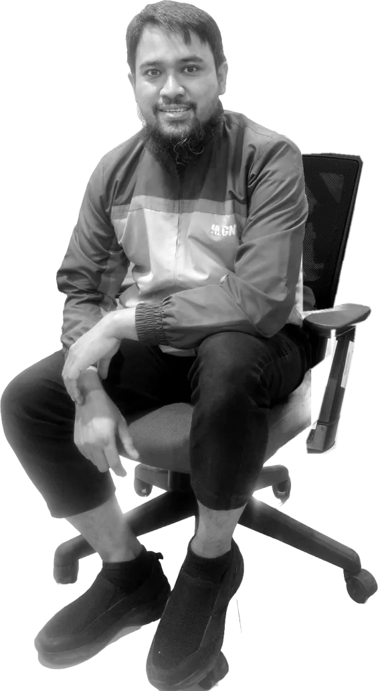
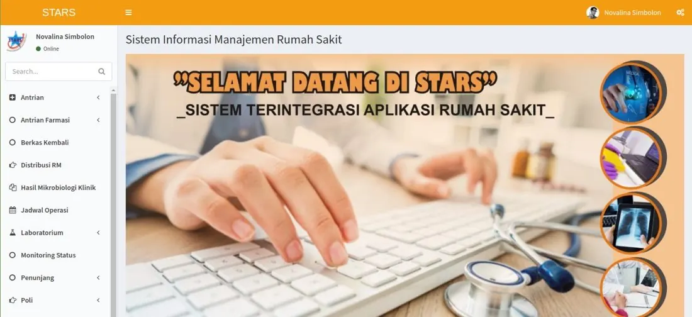
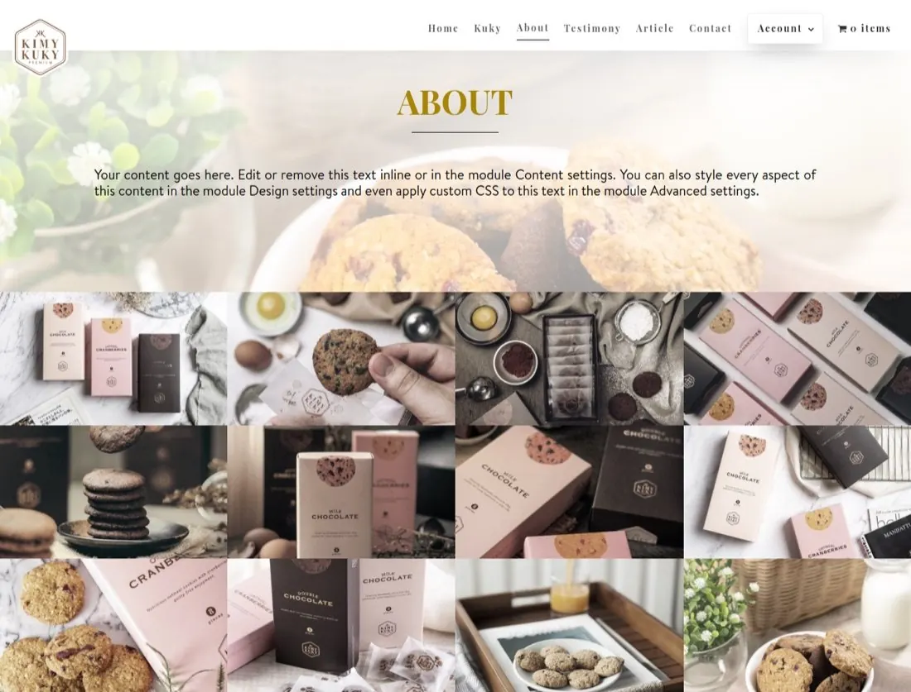
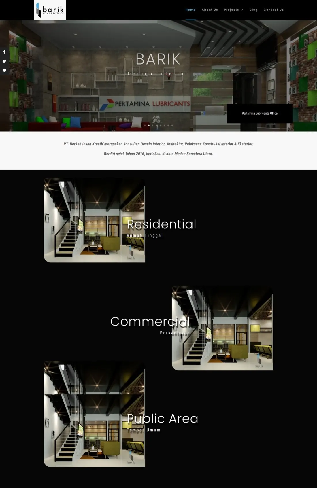

3-1
Faria Education Group
- Svelte · Tailwind CSS · JavaScript
Tuning
I design interfaces in Figma and write the code for them myself: hospital information system modules at RSUP H. Adam Malik Medan, product sites for Faria Education Group, and websites for clients in retail, interior, gaming, and education.

CH 02Profile
CH 03




CH 04
CH 05Contact